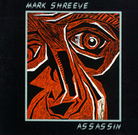
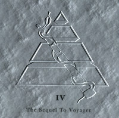
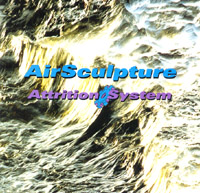
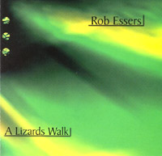
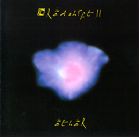
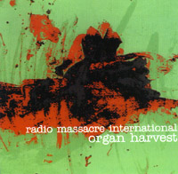
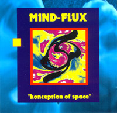
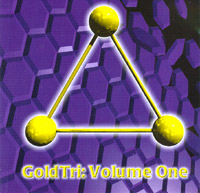
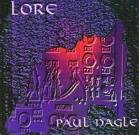

|
5일간 감상회를 진행할 계획이고, 감상회 기간동안에는
신인철님이 감상회 곡에 대한 Poll을 진행해서 경품
도 줄 계획입니다.
많은 참여 바랍니다.
네트웍 속도 문제로 인해서 AOD는 안됩니다. file 형태는 mp3로
되어 있으니 다운로드해서 들으시기 바랍니다. 일정 : 1999년 9월 16일 목요일 정오 12시 - 9월 21일 화요일 정오 12시 |
- Electronics in 90's -
메일링리스트 골든 트라이앵글을 통해 알게된 90년대의 전자음악 밴드들을 소개드리려고 합니다. 테크노가 주류를 이루는 현재 전자음악씬과는 기초적인 부분만을 공유할뿐, 그 기조는 의외로 70년대 진보전자음악의 전성기 시대를 바탕으로 하고 있습니다. 그 가운데에서도 특히 탠저린 드림의 강한 영향을 받은, 베를린 스쿨의 전통을 이어가는 특성이 두드러집니다. 영국, 독일, 네덜란드 등을 중심으로 하고 있으며 본격적인 씬이 모습을 갖춘 것은 대체적으로 90년대 초로 보입니다.
BIG IV - Tangerine Dream, Klaus Schulze, Vangelis, Jean-Michel Jarre - 는 90년대가 저무는 이 무렵까지도 꾸준히 앨범을 내놓고 왕성한 활동을 펼치고 있지만, 사실 누구도 지금이 "그들의 전성 시대"라고는 생각하지 않습니다. 굳이 전자음악이라는 장르의 구분이 무색하게끔 한때 일부 뮤지션들의 전유물이었던 전자악기는 급속히 거의 모든 음악의 영역으로 퍼져나갔고, 20여년전부터 차근차근 비옥하게 다져놓은 토양의 자양분을 흡수하며 뮤지션으로 자란 이들이 테크노, 앰비언트, 뉴에이지 등의 다양한 장르 속에서 펼쳐 보이는 전자음향으로 새로운 전자음악의 전성시대를 개척하고 있습니다.
이러한 전자음악의 다양화는, 한편으로는 아직 70년대 BIG IV의 전성기를 잊지 못하는 팬들에게 아쉬움을 품게하기도 합니다. 꿈결같이 펼쳐지는 전자음향이 만들어내던 광활한 음공간 속에 몸을 담가본 이라면 누구나 머릿속에 그 강한 인상을 새겨 두었을 것입니다. 크기를 가늠할 수 없는 한폭의 장엄하고 거대한 풍경화를 보는 듯한, 때로는 의식과 무의식을 자유로이 넘나들며 정신세계의 깊은 곳으로 듣는 이를 이끄는 듯한, 신비롭고 감동적인 음세계였습니다.
비록 소규모이기는 해도 탠저린 드림, 클라우스 슐체의 감동을 90년대 들어서도 맛볼 수 있게 해주는 그룹들이 아직 존재하고 있다는 것은 기쁜일이 아닐 수 없습니다. 아직 음반 몇장 내놓지 못했어도 이들에게서 다음 세기의 전자음악을 창조해낼 저력과 재능을 엿볼 수 있습니다. 전자음악을 사랑하며 아직 TD, KS를 잊지 못하는 팬들께 반가운 소식이 되는 감상회가 되기를 바랍니다.
부탁드리고 싶은 것은, 혹시나 음악가운데 마음에 드시는 것이 있다면 꼭 구입을 하셔서 들으셨으면 하는 것입니다. 이들이 경제적 어려움없이 앞으로도 꾸준히 활동할 수 있도록 말입니다. 끝으로 아름다운 음악들을 접할 수 있게 해준 골든 트라이앵글 메일링 리스트 회원들에게 감사의 말을 전합니다.
감상곡
1. "Assassin" - Mark Shreeve (11:12)
2. "System Six" - Mark Shreeve (18:28)
3. "Scenes of Capturing Auras" - Rainbow Serpent (19:00)
4. "Malebranche" - AirSculpture (10:31)
5. "Amazonian Lepidoptera Theorize on Chaos" - AirSculpture (9:25)
6. "Phase I" - Rob Essers (7:49)
7. "A Midnight Clear" - Redshift (23:56)
8. "Organ Harvest part I" - Radio Massacre International (12:08)
9. "Destination Unknown" - Mind Flux (7:53)
10. "Amalthea" - FSP (10:21)
11. "Chill Factor" - Paul Nagle (15:52)
윤현식님의 site - 위의 link가 제대로 동작하지 않으면 여길 이용해주세요.
아티스트 소개
Mark Shreeve
마크 슈리브는 80년대초부터 최근까지 꾸준한 활동을 벌이고 있는 영국 일렉트로닉스계의 중견 뮤지션입니다(클라우스 슐체와 공동 작업을 했던 마이클 슈리브와 혼동하기 쉽습니다). 클라우스 슐체, 탠저린 드림등에 의해 70년대에 이미 숙성되었다고 여기고 있었던 "전자음에 의한 록뮤직"의 형상화가 실은 아직도 미개척의 영역으로 남아있는 분야였으며, 이를 인식하고서 다시 그 가능성을 한번 활짝 만개시켜 보여준 장본인이라고 생각합니다.
80년대에 그가 선보인 전자음을 가장 정확히 묘사할 한 단어를
고르라면 그것은 아마도 "역동성"일 것입니다. 거친 숨소리를
내뱉는 운동선수의 숨가쁜 맥박처럼 요동하며 거세게
반복되는 시퀀서의 음향은 슈리브의 음악적 원류를 이루고 있는 탠저린 드림에게서도 좀처럼
찾아보기 힘든 개성이며 매력입니다.
그의 곡 "Assassin"은 전반부를 발췌하여 이미 예바동 홈페이지에 올려 놓은 일이 있습니다. 속지에 적혀 있는 글을 한번 옮겨 적어보죠. 저역시 첫감상에서 비슷한 감흥에 젖어 들었기 때문입니다.
"1983년 9월이었다. 무대는 UK 일렉트로니카 '83, 밀튼 케인즈에서 12시간동안
이어지는 전자음악 페스티벌에서 마크 슈리브는 주공연에 앞서 그의 첫번째 실황
연주를 선보이게 되어 있었다.
낮시간 공연과 제녁 순서 사이의 휴식시간에 간이 판매대에서는 음악을 계속 내보냈다.
이 행사를 위해 참석한 수백명의 관중들은 대부분 이를 단순한 배경음악으로 여겼다.
그런 가운데 스피커에서 마크 슈리브가 그무렵 발표한 LP "Assassin"의 서주부가
들려오기 시작했다.
타이틀 트랙의, 그 낯설고 소용돌이치는 듯한 우주적인 도입부가 그중 몇몇 사람들의
관심을 끌었다. 트랙의 주제부가 시작됨에 따라 갑자기 점점 더 많은 팬들이 스피커를
에워쌌다. 곡이 첫 클라이맥스에 이를 무렵엔 적어도 200명이 넘는 관중들이 몰려들어
놀라움에 가득찬 눈으로 이 믿기 어려운 새로운 음악을 듣고 있었다. 이윽고 판매대는
이 새 음반을 구입하려는 사람들이 구름같이 몰려 장사진을 이루었다.
이는 마크 슈리브의 음악을 처음 듣는 이들이 겪는 강력하고도 신선한 음악적 경험의
시작에 지나지 않았다."
(이글은 당시 공연장에서 슈리브의 음악을 경이로움으로 들었고, 이를 CD화하기 위해
애썼던 앤디 가리발디씨가 쓴 것입니다)

Rainbow Serpent
도이치 그룹 레인보우 서펜트에 대해 알려진 것은 별로 많지
않습니다. 클라우스 슐체, 장 미셸 자르, 옐로, 마이클 크레투,
스티브 로취 등의 이름이 보이는 속지에 적힌 감사의 글을
보노라면 이들 역시 70 일렉트로닉스계의 세례를 흠뻑 받고
자라난 존재임을 확인할 수 있습니다. 올해 발매한 4번째 앨범
<The Sequel to Voyager>는 96년작 2집<Voyager>의
속편입니다. 트랜스/앰비언트 계열의 테크노 밴드의 음악을
연상케 하는 음악적 요소가, 그 원류가 되었을 70년대의 전자음과
어색함없이 부드럽게 어우러져 빚어낸 장대한 일렉트로닉
심포니입니다.
AirSculpture
영국 레딩(Reading) 출신의 밴드 에어 스컬프춰는, 자신들의 음악이 70년대 후반 탠저린 드림의 음악으로부터 강한 영향을 받고 있음을 공공연히 이야기합니다. 에이드리안 비즐리, 존 크리스찬, 피터 루친스키의 3인조 편성도 TD와 그대로 닮아있습니다. 과거의 영화를 잃은채 뉴에이지 코너의 한쪽 구석에 초라히 자리잡은 TD가, 90년대에 펼쳐보여야 하지 않았을까 싶은 순연한 전자음향의 항연을 펼치고 있습니다. 밴드명처럼 전자음으로 쌓아올려진 웅장한 가상의 구축물을 조망하는 느낌을 받습니다.
에어 스컬프춰는 1995년 <Impossible Geometries>를 발표하며 데뷰합니다. 25분, 19분, 9분여의 대곡 3편이 담겨있는 데뷰앨범에서 70년대의 잔영을 선명하게 간직한채 현대적인 모습으로 거듭난 TD를 봅니다. 저는 한동안 TD의 <Dream Mixes>를 듣고서, 이것이 TD가 90년대 이후 감상자들에게 다가설수 있는 가장 바람직한 방향이며 최선의 선택이라고 생각한 적이 있었습니다. 그러나 에어스컬프춰의 음악을 들은후 오히려 TD에게 작으나마 원망을 품지 않을 수 없었습니다. 왜 에드가 프뢰제는 이같은 음악을 만들지 못하고 평범한 뉴에이지 스타일로 선회한 것일까 하는 아쉬움이었습니다. 곧 그 원망은 자연스레 에어스컬프춰에 대한 애정과 기대로 모습을 바꾸었고 앞으로 펼쳐나갈 활동에 큰 기대와 신뢰를 품게 만들었습니다.
아날로그 신디사이저에 크게 의존하였던 TD와 디지털 기기를 적극 활용하는 에어스컬프춰가 내는 음향은 아무래도 느낌면에서 차이가 있긴 합니다. 좀더 화려하고 깔끔하며 세련되어 있다고 하면 좋을것 같습니다.
더욱 놀라운 점이라면, 에어스컬프춰는 여태까지 발표한 모든 곡들을 즉흥연주에 의하여 만들어 냈다는 사실입니다. 과문한 탓일지 모르지만 실황공연시 즉흥적 연주를 즐겨 쓴 밴드들은 있었어도 에어스컬프춰처럼 즉흥성, 우연성이 빚어내는 가능성에 전적으로 의존한 밴드는 일찌기 본일이 없습니다. 그리고 그결과는 즉흥연주라는 사실이 믿어지지 않을 정도로 정도로 정교하고 짜임새를 갖추고 있습니다.
신진밴드의 어설픔이라고는 조금도 찾아 볼수 없는 원숙함이 배어있는 데뷰작에서는 TD의 <Phaedra>, <Rubycon> 무렵의 사운드를 이따금 연상하게 되는 흐름이 들려 옵니다. 그 귀에 익은 소리와 신선하고 자극적인 음향이 합일하여, 과거와 미래의 전자음악이 자연스레 만나는 곳에 에어 스컬프춰를 위치하게 합니다.
이들의 두번째 앨범은 <Attrition System>으로, 95년 무렵 리허설 세션을 담은 테잎에서 발췌한 곡들로 이루어져 있습니다. 제 소견으로 볼때 단연코 이들의 최고작입니다. 10분 전후의 여덟 트랙은, 어느 곡하나 제쳐 놓기 어려운 매력적인 음향들로 가득합니다. 공개할 목적이 아니었던 트랙들을 모아서 음반화한데에는 데뷰 앨범들 듣고 매료된 이들의 요청에 힘입은 바 컸다고 합니다.
3집 <Europa>는 에어스컬프춰의 공식적인 첫 실황공연 앨범입니다. 94년 암스테르담의 Hulzen에서 열린 알파-켄타우리 페스티벌시의 공연을 그대로 담아놓고 있습니다. 전작과 달리 20분이 넘는 대곡들의 존재감으로 묵직하며 어두운 에네르기로 충만하여 있습니다(이 경향은 최근 발표한 4집 <Thunderhead>에도 이어집니다). 유실되었던 탠저린 드림의 전성기 미발표작이라 해도 대부분 믿을 법한 곡들로 채워져 있습니다. 탠저린 드림의 팬들에게 다시금 깊은 향수를 불러 일으킬 것이라고 생각됩니다. 제가 가장 좋아하는 그룹이라 소개글을 좀 길게 썼습니다.
Rob Essers
롭 에서스는 네덜란드의 전자음악 뮤지션으로, 데뷔작 <Raincolours>와 <A Lizards Walk>등 2매의 앨범을 발표하였습니다. 그에 대해서 알려진 것은 별로 없습니다. 슈멜링 시대의 탠저린 드림과 맥이 닿아 있는, 밝고 경쾌한 "양지"의 전자음향을 들을 수 있습니다.
Redshift
마크 슈리브가 그의 솔로 활동을 잠시 접고 조직한 밴드가 레드시프트(Redshift)입니다. 시대의 흐름인듯, 어쩔수 없이 후기 탠저린 드림과도 같은 역동적인 뉴에이지 스타일로 변모해가던 그의 음악은 레드시프트의 결성과 함께 다시 비약적인 탈바꿈을 행합니다. 70년대 탠저린 드림으로의 회귀라고 하면 적당한 표현이 될까요. 소개하는 곡은 96년 영국 조드렐 뱅크에서 있었던 콘서트의 실황 녹음입니다. 강한 에너지로 가득한 음공간은 여전하지만, 그 분위기만은 자신이 처음 음반을 내놓을 무렵보다 훨씬 시간을 거슬러 올라가, 과거의 흔적을 어루만지며 아쉬워 하는 듯한 느낌을 자아냅니다.
Radio Massacre International
라디오 매서커 인터내셔널 역시 자신들의 음악적 기조가 탠저린 드림임을 공공연히, 때로는 자랑스러이 밝히는 영국의 일렉트로닉스 밴드입니다. 에어 스컬프춰와 함께 가장 활발한 활동을 벌이며 지명도도 높은 유망주라 할 수 있겠습니다.
그러나 에어스컬프춰의 음악적 경향과 달리 라디오 매커서 인터내셔널의 음악은 암물하며 비극적입니다. 멜로트론, 아날로그 시퀀서를 비롯한 고전적인 전자장비들을 고집하여, 컴퓨터 및 디지털 장비의 활용에 적극적인 모습을 보이는 에어스컬프춰와 역시 대조를 이룹니다. 그리고 좋은 일인지 나쁜 일인지 모르겠지만, 이들의 음악은 해를 거듭할 수록 깊이를 알 수없는 어두운 심연 속으로 더욱 깊숙이 침잠하는 것 같습니다. 올해 들어서도 라디오 매서커 인터내셔널은 두번째 더블 CD <Borrowed Atoms>와, 즉흥 공연 실황을 담은 <Bothered Atmos> 등을 발표하였습니다. <Organ Harvest>는 그들의 대작 <Frozen North>와 함께 제가 꼽는 그들의 최고 걸작입니다. 음습하고 황량한 전자음이 펼치는 한편의 심리극입니다.

도이치 테크노 그룹 마인드 플럭스는 슐체의 수법을 많이 닮은 전자음악을 만들고 있습니다. 주류 테크노에서 한걸음 비켜난 듯한 비딱함이 매력입니다. 이제는 메인스트림이 된 테크노와 제가 좋아하는 7~80년대 전자음악의 간극이 이상하게도 크게 느껴져, 왜 그 빈 공간을 메꾸는 밴드들이 없을까 항상 궁금하게 여겼는데 이 마인드 플럭스처럼 좀처럼 찾기 힘든 곳 여기저기에 숨어있는 것 같습니다. 지금까지 네장의 앨범을 발표한 토마스 팽거, 마이클 커스턴의 2인조로, 들으시면 느낄 수 있듯 다양한 스펙트럼에 걸친 전자음악을 만들며 저같은 사람이 테크노에서 느끼는 소외감을 잘 감싸안는 가교역할을 하고 있습니다.
Free System Project
FSP(Free System Project)는 마르셀 엥겔스라는 뮤지션 혼자서 이끄는 밴드명입니다. 골든트라이앵글 회원이기도 하죠. 그의 앨범을 아직 구입하지 못해서 음악적 경향을 말하기 어렵습니다만, <GoldTri Vol.1>에 실린 본작을 통해 보건대 상당히 역동적이고 정열적인 음악을 구사하고 있음을 알수 있습니다. 속지에 실린 글을 올겨보면 : "Marcel Engels's style of combining the advantages of both digital and analogue equipment into one sound first appeared on FSP's first CD, "Impulse", in 1997. A CD single/teaser followed and the second CD album is due later this year". 상당수의 가입 회원이 실제 뮤지션이기도 한 골든 트라이앵글에서는 자신들이 만든 전자음악과 유명 그룹들의 미발표곡들을 모아 더블 컴파일레이션 CD를 만들고 있습니다. 현재 2집까지 나와있는 상태입니다.

뮤지션 폴 네이글의 대한 정보는 그가 직접 만들고 운영하는 홈페이지를 방문하시면 얻을 수 있습니다. 오랜 활동과 다양한 뮤지션들과의 음악적 교류를 통해 높은 지명도를 얻고 있는 그의 음악은 해를 거듭할수록 다채롭고 현대적이며, 동시에 70년대의 화려한 영화를 누렸던 진보전자음악의 그림자가 짙게 배어나는 전자음을 들려줍니다. 그의 최신작인 <Lore('99)>에서 선곡하였습니다.
1999.9.5 예술바위동호회 회원 김진석 만듬
Psychedelic & Nordic prog rock
1. "Dia" - Mutantes (Os Mutantes)
2. "Cantor De Mambo" - Mutantes (Os Mutantes)
잘 아시는 브라질 인기 그룹중 하나입니다. " O A e o Z " 앨범같은 경우 많은 평론가 들이 예스의 영향을 많이 받았다고들 평하지만 그건 그룹의 후기에 속하는 음반이구, 초기에는 들으실 곡들과 같이 팝과 사이키델릭의 중간쯤에다가 라틴 색깔 살짝 입힌 음악 스타일이었군요,촌스럽게도^^ 두번째곡은 맘보 록이라구 해야할지....
3. "Tales of Spain" - Carmen
4. "Reprise" - Carmen
스페인 그룹이라고 생각하시면 깜박 속는겁니다. 사실은 영국 밴드죠. 진짜 스페인 그룹 Mezquita 나 Triana, Cai 뺨치는 플라멩고 록을 들려줍니다. 지브랄타에 올려놓은 글을 보면 제스로툴과 커브드에어,그리고 플라멩고를 합쳐 놓은 음악을 찾는다면 바로 이들이 답이라는 비교를 해놓았더군요. 여러차례 메일 오더 리스트에서도 보고 그냥 넘겼었는데 우연히 뉴스 그룹에 이들의 음악이 올라왔더군 요. 들으실 음악들은 제일 많이 알려진 음반인 Fandangos in Space 중에서 두곡입니다.
5. "Kingdom of Sadness" - Valinors Tree
세번째 곡부턴 말씀드린대로 레코드 헤븐에서 팍팍 밀구 있는 스웨덴을 비롯한 노르딕 프로그레시브 그룹들의 곡을 모아놓은 샘플러 시디에서 다시 제가 추려낸 그룹들입니다. 잘 아시는 랜드베르크나 이실더스베인, 싱카두스 등등은 다 빼고 여기서도 마이너라고 할만한 그룹들 위주로 골랐습니다. 이렇게 장황하게 서론을 늘어놓는 이유는 바로 이 Valinors Tree 에 대해서는 끝내 알게 된게 없기때문이기도 합니다. 음악만 듣고 평한다면 앵글라고드와 아넥도튼등의 아류정도로 혹평할수도 있고 연주 실력이 상당히 뛰어나다는 점에서 앞으로의 가능성을 점칠수도 있겠네요,(얼마나 된 그룹인지도 잘 모르지만^^) 보컬은 그리 썩 제 맘에 들지 않습니다. 팝적인 분위기를 물씬 풍기네요.
6. "Busy" - Last Laugh
제가 소개하는 곡중에 가장 헤비한 곡일것 같습니다. 역시 이 그룹도 아는 정보가 없는데요,워낙에 제가 신세대 그룹들에 대해서는 관심이 적어서 선곡이랍시구 해놓고 제대로 된 정보도 못드리는 점 죄송스럽습니다. 원래 샘플러가 궁금하면 사서 들어라는 식이라서 딸랑 곡명과 앨범명정도 나와있네요.
7. "The Russian Ice Princess" - Galleon
그래두 제법 알려진 그룹인것 같은데 스웨덴의 4인조 그룹이고 첨엔 Aragon 이란 이름의 트리오로 출발했지요. 총6장의 음반을 발표하고 있고 이 곡이 실린 음반은 96년에 나온 All European Hero 앨범에 실린 곡입니다. 음악은 둘째치고 재킷 디자인은 프로그 그룹치고는 거의 꽝이라고 할 만합니다^^
8. "Condor" - Grand Stand
역시 이들에 대한 정보를 좀 찾아 봤는데 나오는게 없군요. 다분히 퓨전느낌의 빠른 인트로로 시작되는 연주곡인데 가벼운 기분으로 들을만한 곡입니다. 키보드로 주된 흐름을 따라가는군요. 중간에는 꽤나 장황한 분위기로 바뀌기도 하구요. 이번에 소개하는 무명의 그룹들 모두가 연주 실력들은 쓸만하다는 느낌이 드는군요.
9. Pink_Floyd - Early Singles
-
1) Arnold Layne
2) Candy and a Current Bun
3) See Emily Play
4) Scarecrow
5) Apples and Oranges
6) Paint Box
7) It Would be So Nice
8) Julia Dream
9) Point Me at the Sky
10) Careful with that Axe Eugene
[신인철, Fish, icshin@bioneer.kaist.ac.kr] 항상 앞서가는 예바동.. 이번에도 아마도 세계최초 (!!^^;)로 사이버 감상회를 갖게 되었습니다. 정말 예바동의 멤버.. 게다가 창단 멤버라는 사실이 너무나 자랑스럽습니다.. ^^; 빨리 목요일이 왔으면 하고 기대되는데요.. 이번엔 감상회의 뒷풀이가 없어서 조금 아쉽지만 뭐 정 아쉬우면 icq같은데서라도 만나서 채팅이라도 하져.. (저의 icq#는 41920880 ^^;) 동장님이 말씀하신대로 이번 감상회 온라인 뒷풀이 행사로.. 역시 모든 바동민들이 기대하시는 씨디 따먹기를 진행하기로 하겠습니다. 아시는 분은 다 아시겠지만 본 씨디는 부클렛과 뒷 표지가 없고.. 알맹이에도 레이블이 되어 있지 않은 스페셜 리미티드 에디션 씨디입니다. (아마 씨디를 따먹으신 분은 동장님이나 저한테 문의하시면 자켓이미지 정도는 얻을 수 있을거에요..) 다음의 세가지 타이틀을 경품으로 하겠습니다. 1. Arrakeen - Patchworks 2. SFF - Symphonic Pictures 3. Esperanto - Last Tango 1 번과 2번은 이번 감상회의 진행자이신 김진석님이 기증하신거구요.. 3번은 제가 기증하는건지 왕근님이 기증하는건지 동장님이 기증하는건지 잘 모르겠지만 아뭏든 바동에서 드리는 겁니다. ^^; 이장원님과 김진석님이 올려주신 음악을 들으신 후 1. 가장 마음에 들었던 곡 2. 가장 별루였던 곡 3. 가장 마음에 들었던 곡으로 뽑힐만한 곡 4. 가장 별루였던 곡으로 뽑힐만한 곡 네곡을 적으셔서 저한테 (바동으로 보내주셔도 되는데.. 바동으로 보내면 다른 분들에게 팁을 주는게 되겠죠 ?) 메일로 보내주시면 됩니다. 그러면 고득점자 3명을 뽑아서 씨디를 드리도록 하죠.. 아무도 못 맞추셨을 경우에는 다음 감상회 경품으로 이월하기로 하구요.. 동점자가 여러명 나왔을 경우에는 간단한 퀴즈로 정하던가 그렇게 하죠.. 많은 참여 바랍니다 !!